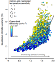
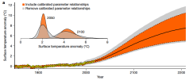
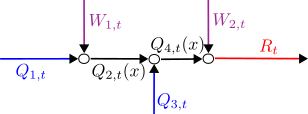
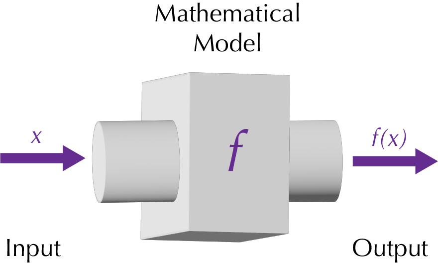
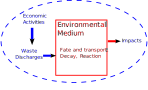

Introduction to Systems Analysis
Lecture 03
September 4, 2024
Review of Last Week
Course Policies
If you missed last class, make sure you read the syllabus!.
Tools Setup Lab
If you missed last Wednesday:
- Go through the lab by Wednesday to make sure you’re set up for the semester.
- Email Prof. Srikrishnan to get an extension so you can submit.
- Come to office hours for help if something isn’t working.
Questions?

Text: VSRIKRISH to 22333
Systems Basics
What Is A System?
A system is:
“an interconnected set of elements that is coherently organized in a way that achieves something…
A system must consist of three kinds of things: elements, interconnections and a function or purpose.”
— Donella Meadows, Thinking in Systems: A Primer, 2008
Why Are Systems Interesting?
- “Interconnected set of elements”
- “Function or purpose”
Example: Climate Change
Changes to climate occur bassed on a variety of processes across scales, including:
- carbon sources/sinks;
- aerosol emissions;
- ocean heat uptake;
- surface albedo;
- El Niño/La Niña (ENSO)
Example: Climate Change
Correlations among Climate Parameters
Source: Errickson et al. (2021)
Example: Climate Change
Correlations among Climate Parameters
Source: Errickson et al. (2021)
Example: Water Pollution
Contaminant levels in a body of water also depend on a number of processes which may have different scales and rates.
Can we think of some?
System State
System State: quantities or variables which evolve over time based on external inputs and system dynamics.
The state gives you a “snapshot” of the system at a given point in time.
Stocks and Flows
- A stock is the amount of a system property: concentrations of a pollutant, numbers of currency units, etc.
- A flow is the way in which a stock changes: decay, diffusion, production, consumption, etc.
Residence Time
We can use the notion of stocks and flows to formalize the idea of residence time: average time a quantity stays at a system component.
\[ \underbrace{\tau}_{\text{Residence} \\ \text{Time}} \times \overbrace{F}^{\text{Flow} \\ \text{In/Out}} = \underbrace{M}_{\text{Stock}} \]
Steady-State Residence Time
Steady-state condition on flows \(F_\text{in}\) and \(F_\text{out}\):
\[\begin{gather*} F_\text{out} = F_\text{in} = F \\ \Rightarrow \bbox[5pt, border: 5px solid red]{\tau = M/F} \end{gather*} \]
Simple Example
A college has a constant undergraduate enrollment of 15,000 students. No students flunk out or transfer, so the residence time is four years.
- How many students graduate every year?
- How many students enroll every year?
Modeling Systems
How Do We Develop Models?
- Mass balance equations let us track changes in stocks at particular points;
- Equilibrium conditions are requirements that there is no net flow, and thus that stocks are preserved;
- Fate and transport modeling involves quantifying how stocks change as they move through the system.
Systems Analysis
What We Study
- System dynamics;
- Response to inputs;
- Alternatives for management or design.
Needs
- Definition of the system
- System model
What Do We Need To Define A System?
- Components: relevant processes, agents, etc
- Interconnections: relationships between system components
- Control volume: unit of the system we are trying to model and/or manage
- Inputs: control policies and/or external forcings
- Outputs: measured quantities of interest
Example: River System
Figure 1: Illustration of a system, including notation.
What Is A Model?

{kind=link}
Mathematical Models

Mathematical Models of Systems

Conceptual Model of a System
Environmental Systems

- Municipal sewage into lakes, rivers, etc.
- Power plant emissions into air
- Solid waste placed on landfill
- CO2 into atmosphere
Deterministic vs. Stochastic Models
Deterministic Models
Stochastic Models
Descriptive vs. Prescriptive Models
Descriptive Models
- Used primarily for describing or simulating dynamics.
- Intended for simulations and exploratory and/or Monte Carlo analysis.
Prescriptive Models
- Specify (prescribe) an action, decision, or policy.
- Intended for optimization or decision analysis.
Analytic vs. Numerical Solutions
Mathematical models can be solved:
- Analytically: can find the exact solution in closed form;
- Numerically: can only find solutions (exact or approximate) using computational tools.
“All Models Are Wrong, But Some Are Useful”
…all models are approximations. Essentially, all models are wrong, but some are useful. However, the approximate nature of the model must always be borne in mind….
— Box & Draper, Empirical Model Building and Response Surfaces, 1987
What Are Models Good For?
Models can corroborate a hypothesis by offering evidence to strengthen what may be already partly established through other means…
Thus, the primary value of models is heuristic: Models are representations, useful for guiding further study but not susceptible to proof.
— Oreskes et al, “Verification, Validation, and Confirmation of Numerical Models in the Earth Sciences”, 1994
Models And Assumptions

XKCD Comic 2355
Source: XKCD 2355
Key Takeaways
Key Takeaways (Systems)
- A system is an interconnected set of components.
- Systems are interesting because interconnections can result in unexpected outcomes.
- Key terms:
- state
- stocks
- flows
Key Takeaways (Systems Definition)
- To define a system, need to specify:
- components
- interconnections
- control volume
- external inputs
- outputs of interest
Key Takeaways (Models)
- Mathematical models allow us to understand how external inputs combine with internal system dynamics to produce outputs.
- Models can be prescriptive or descriptive depending on goal of analysis.
- For most interesting problems, cannot solve analytically and need to use numerical methods.
Key Takeaways (Models)
- Simulation models: Generate data by evaluating model to represent system dynamics.
- Optimization model: Find parameters which maximize/minimize some criterion.
Key Takeaways (Warning!)
- All models are at best approximations: be conscious of what assumptions you’ve made and how they might change the modeled outcomes (you will be asked to do this on homeworks).
Upcoming Schedule
Next Classes
Monday: Examples of Formulating/Analyzing Models.
Wednesday: Overview of System Dynamics
Assessments
Homework 2: Due Friday at 9pm.
References
References
Errickson, F. C., Keller, K., Collins, W. D., Srikrishnan, V., & Anthoff, D. (2021). Equity is more important for the social cost of methane than climate uncertainty. Nature, 592, 564–570. https://doi.org/10.1038/s41586-021-03386-6